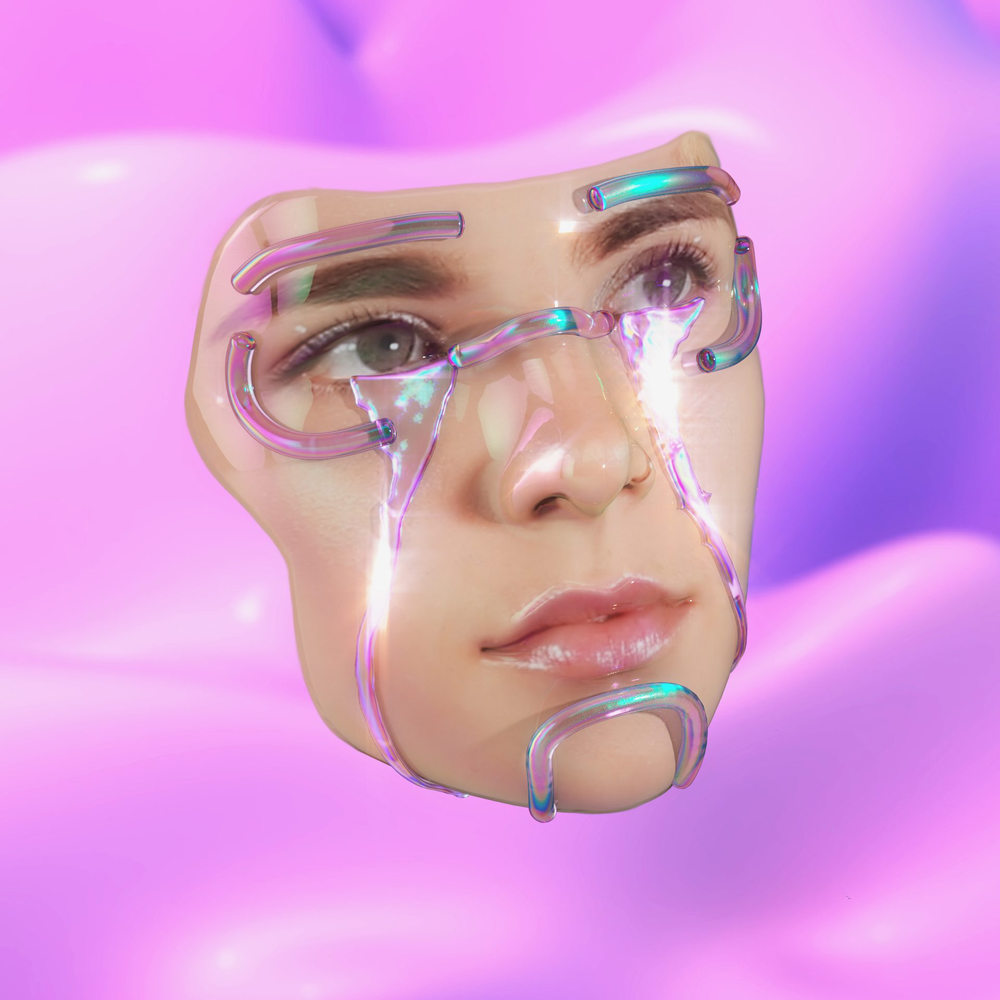
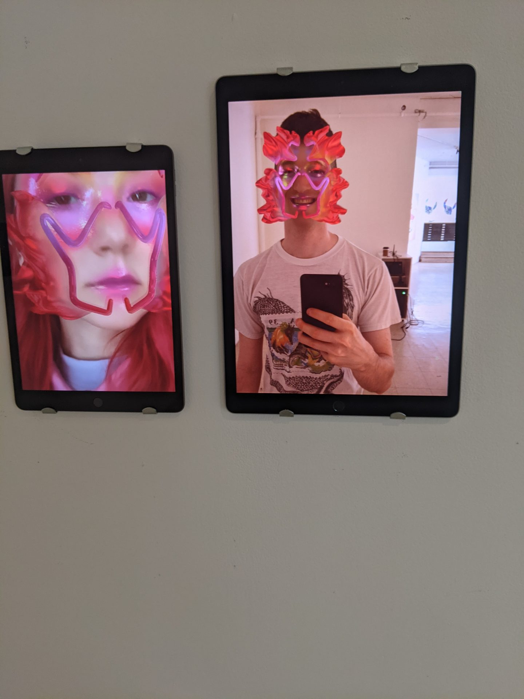
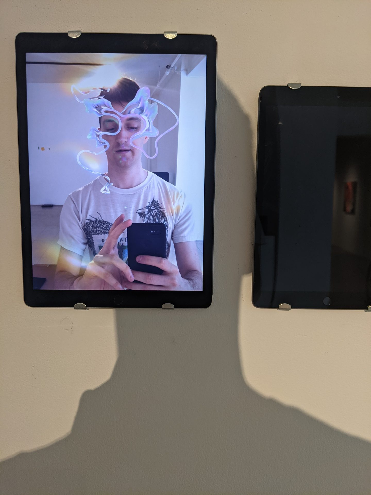
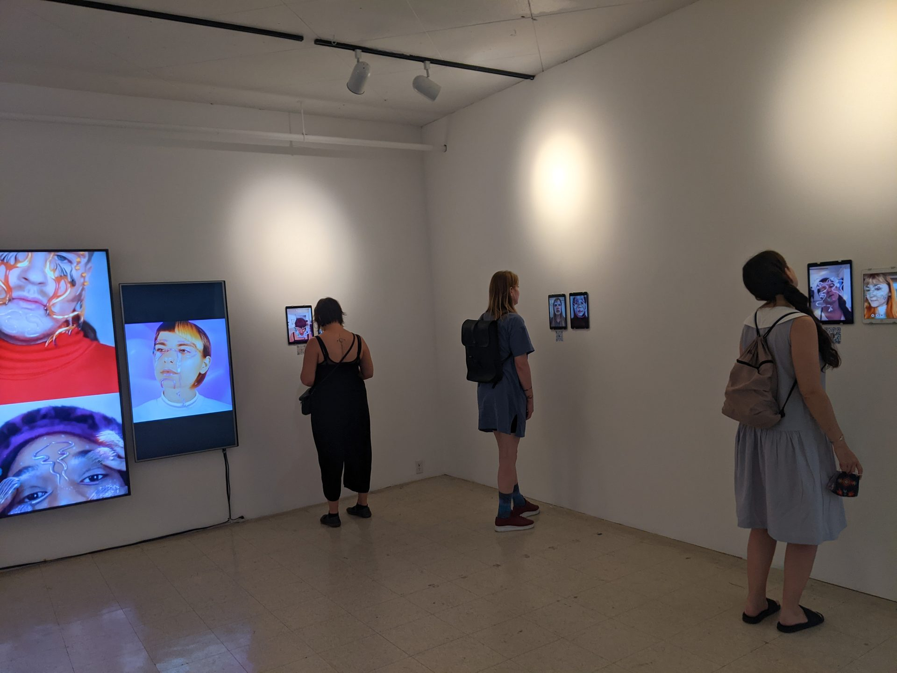
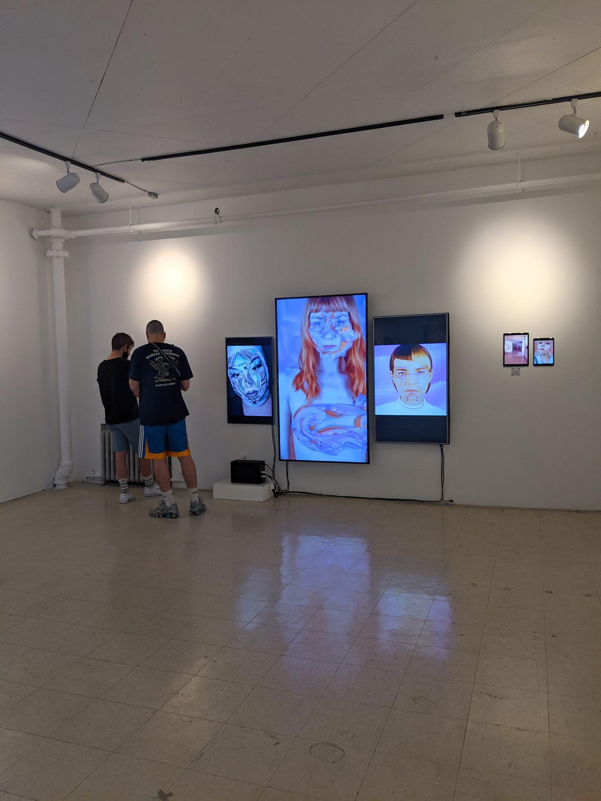

The visions of Ines Alpha explore the future of makeup, fashion, and identity—reimagining beauty through digital cosmetics that do not conceal or accentuate, but create a dream space where originality and exuberance reign. Her work pushes for a digital identity that dares to shine and refuses to conform.
Within these manifestations, bodies interchangeably mix with digital matter to the point of confusion. Facial features become tendrils, gills, vivacious fins. Their materiality shifts between crystals, water, jelly, scales, and skin. The most delicate sea creatures are integrated into the human body as living ornaments. The body becomes part of a complex coral, an assembly of living jewelry, merging the self to the post-physical.

The body becomes part of a complex coral, an assembly of living jewelry, merging the self to the post-physical.
Through AR filters on iPads positioned throughout the gallery, visitors wore Alpha’s digital cosmetics on their own faces in real time. Each “look” insinuated an entire fictional world, a mystical mythology of its own. These surreal sights remind us of the importance of integrating human emotions and dreams in the digital futures we are creating.


Humans are already cyborgs of cloth and ornament—augmented by shoes, watches, tattoos, makeup. AR cosmetics are simply the next step in an ancient lineage of body augmentation. At Art Mûr, iPad stations throughout the gallery became photobooths from the future.

